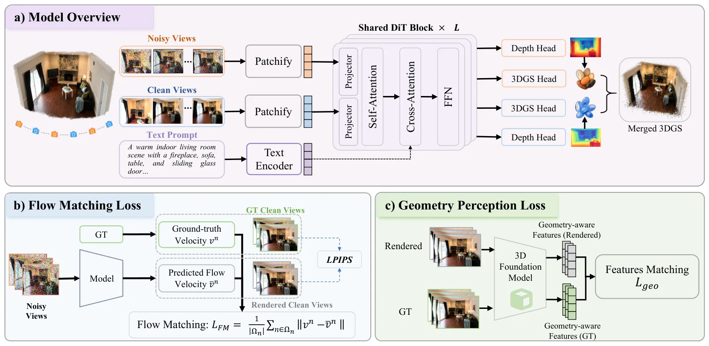
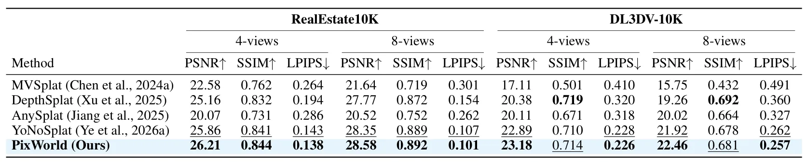
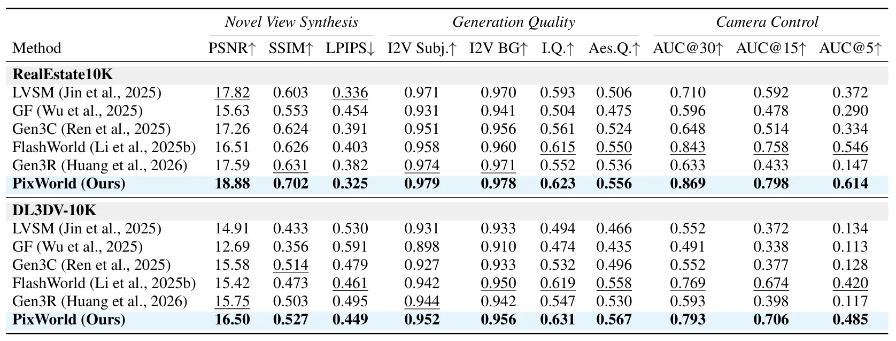
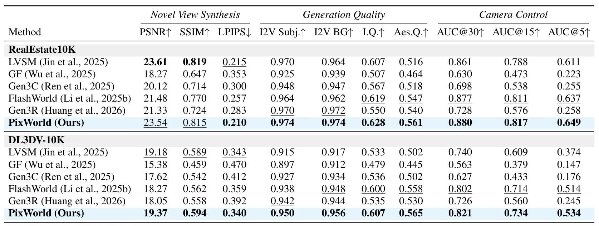
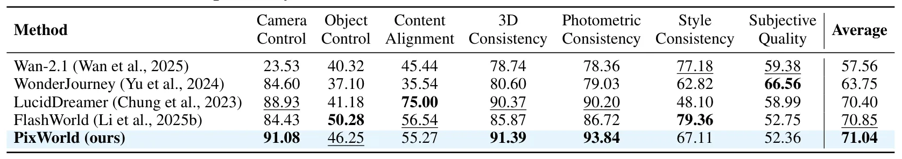

PixWorld：在像素空间统一三维场景生成与重建PixWorld: Unifying 3D Scene Generation and Reconstruction in Pixel Space
更偏 3D 生成和通用场景表示，和 SLAM/GNSS 间接相关；但几何感知损失与统一重建/生成框架值得跟踪。
一句话工作总结
直接在像素空间监督 3D 扩散，把重建和生成统一到一个几何感知模型中。
摘要
PixWorld 把 3D reconstruction 和 3D generation 统一到像素空间扩散范式中，避免 latent-space 方法中由 VAE/RAE 编码引入的信息损失。它直接在渲染图像上定义扩散监督，并额外引入 3D foundation model 特征空间中的几何感知损失，以提供更结构化的 3D 监督。
3D reconstruction and generation are commonly tackled by separate paradigms: pixel-based regression for reconstruction, and latent diffusion for generation. Recent works attempt to unify them in latent space, but with notable drawbacks: the diffusion objective is defined on latent features rather than the underlying 3D representation, and both branches suffer from information loss introduced by latent encoding, while requiring a pretrained Variational Autoencoder (VAE) or Representation Autoencoder (RAE). In this paper, we reformulate these two tasks under a unified pixel-space diffusion paradigm and introduce PixWorld, a single model that jointly addresses 3D reconstruction and generation. By supervising diffusion directly on rendered images, PixWorld removes the above limitations and aligns optimization with 3D scene fidelity. Beyond photometric and perceptual supervision that operates at the 2D image level and lacks 3D geometric awareness, we further introduce a geometry perception loss that aligns rendered views with their ground truth in the geometry-aware feature space of a pretrained 3D foundation model, providing 3D structural supervision. PixWorld consistently outperforms prior latent-space generation methods and matches state-of-the-art reconstruction methods, demonstrating the superiority of a unified pixel-space approach.
中文解读摘录
- 链接：https://arxiv.org/abs/2607.05373 ｜ PDF：https://arxiv.org/pdf/2607.05373 ｜ 项目页：https://sensengao.github.io/PixWorld/
- 中文题名：PixWorld：在像素空间统一三维场景生成与重建
- 关键信息：不用 latent-space diffusion，而是在渲染图像像素空间直接监督扩散目标，并引入 3D foundation model 特征空间中的 geometry perception loss。
- 为什么值得看：它把 3D reconstruction 与 3D generation 放到统一训练范式里，可能影响后续可控场景生成、仿真数据构建和重建先验设计。
- 需要核查：像素空间扩散的计算成本、几何损失对真实几何一致性的贡献，以及在真实多视图采集与机器人场景中的泛化。
图表/页面预览

{kind=link}

{kind=link}

{kind=link}

{kind=link}

{kind=link}
